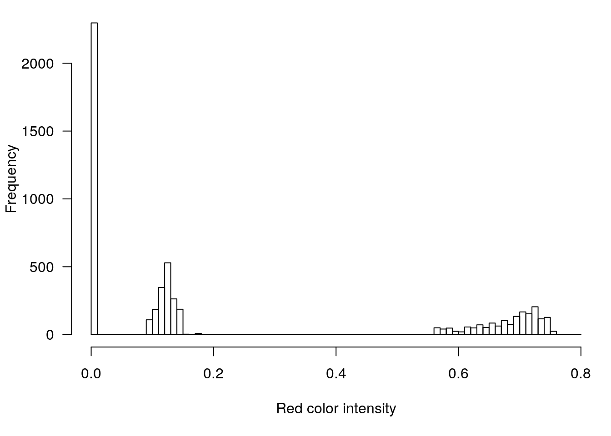

8 Rendering the R logo in Minecraft
As a further illustration of use of the miner package to interact with Minecraft from R, here I will render the R logo within Minecraft.
8.0.1 Load and prepare an image file
First, let’s download the image file from the web. We’ll load it directly into R from the web using the imager package.
library(imager)
url <- "https://www.r-project.org/logo/Rlogo.png"
logo <- load.image(url)Print to see the size of the image.
logo## Image. Width: 800 pix Height: 700 pix Depth: 1 Colour channels: 4The image is stored as a 4-dimensional array: horizontal and vertical position, time, and color.
dim(logo)## [1] 800 700 1 4Let’s reduce the size to 80x70.
logo <- resize(logo, 80, 70)There is a bit of shading in the logo, but mostly there are three colors: transparent, gray, and blue. If we look at a histogram of the first color channel (red), we can see the three pieces:
par(mar=c(5.1,4.1,0.6,0.6), las=1)
hist(logo[,,,1], breaks=100, main="",
xlab="Red color intensity")
So let’s truncate at 0.05 and 0.4.
logo[] <- cut(logo, c(-Inf, 0.05, 0.4, Inf))
logo <- logo[,,1,1]8.0.2 Render in Minecraft
Now let’s load the miner package, connect to the MineCraft server, and find a spot to place the logo.
library(miner)
mc_connect()
host_pos <- getPlayerPos()
host_pos[2] <- host_pos[2] + 10Now let’s render the R logo using gray and blue wool, leaving parts transparent.
First, we pick out the blue and gray wool blocks, to get the item and style IDs.
blue <- find_item("Blue Wool")
gray <- find_item("Light Gray Wool")Now we try rendering the logo.
for(i in 1:nrow(logo)) {
for(j in 1:ncol(logo)) {
if(logo[i,j] == 2)
setBlock(host_pos[1]+(nrow(logo)-i),
host_pos[2]+(ncol(logo)-j),
host_pos[3],
blue[2], blue[3])
if(logo[i,j] == 3)
setBlock(host_pos[1]+(nrow(logo)-i),
host_pos[2]+(ncol(logo)-j),
host_pos[3],
gray[2], gray[3])
}
}The result looks like this: